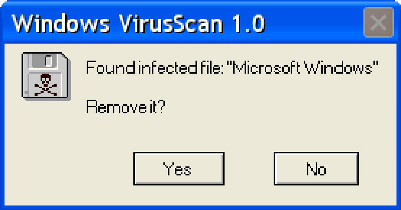

Christine Peterson, the executive director of the Foresight Institute, a nonprofit think tank focused on nanotech and artificial intelligence.
Eric Raymond, aka ESR, open-source software advocate, author of The Cathedral and the Bazaar. and of The New Hacker's Dictionary.
Open source doesn't just mean access to the source code.
The four most critical pieces of infrastructure that make the Internet work -- Bind, Perl, sendmail and Apache -- every one of these is open source, every one of these is super reliable. The Internet would not function if they weren't super reliable, and they're super reliable precisely because throughout their entire history people have been constantly banging on the code, looking at the source, seeing what breaks and fixing it.- Eric Raymond
Richard Stallman aka RMS, The GNU Project
“Free software” means software that respects users' freedom and community. Thus, “free software” is a matter of liberty, not price. To understand the concept, you should think of “free” as in “free speech,” not as in “free beer.”
So what's the difference?
"This software is immoral, since I do not have the right to see what it does on my computer.”
"This software is of poor quality since few people have participated in its development and it depends on a single company (Microsoft) to evolve. "
A quote from Paolo Colonello (the creator of Bligoo, the blogging platform)